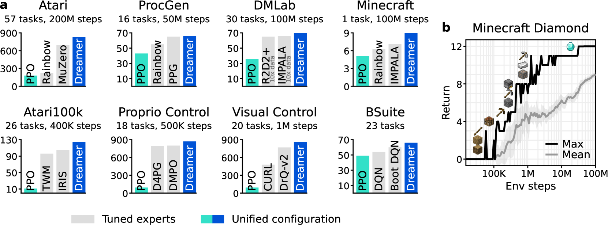
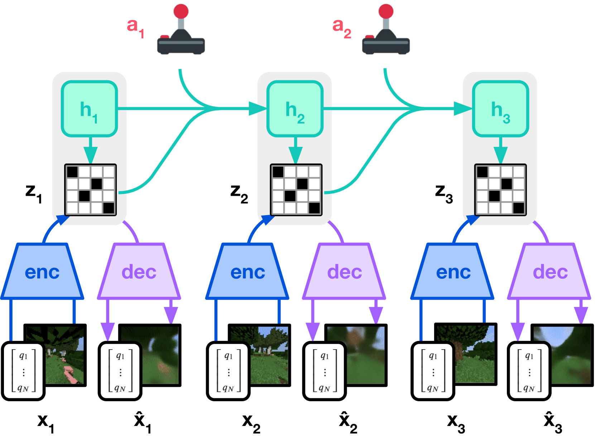

단일 고정 하이퍼파라미터로 150+ 태스크(연속·이산·픽셀·상태·희소보상)를 모두 마스터하는 첫 범용 model-based RL. 핵심은 크기가 여러 자릿수로 변하는 신호를 안정적으로 다루는 symlog·symexp twohot·KL balancing·free bits·return normalization. 인간 데이터·커리큘럼 없이 Minecraft 다이아몬드 자동 채취를 최초로 달성(≤1억 스텝, 모든 시드가 발견). Atari·DMLab·ProcGen·Atari100k·DMC visual/proprio 전 벤치에서 각 도메인 SOTA를 하나의 알고리즘으로 갱신.
모델기반 RL은 데이터 효율에서 유망하나, 지금까지는 벤치마크마다 하이퍼파라미터를 새로 튜닝해야 했다. 그 원인은 (1) 보상·리턴의 크기 스케일이 도메인마다 수 자릿수로 달라 예측기가 폭주하거나 죽고, (2) latent dynamics의 KL 두 항(prior/posterior)이 균형을 잃어 잠재 표현이 붕괴하며, (3) 픽셀·희소보상·연속·이산 등 이질적 입력·출력을 한 파이프라인에서 다루기 어렵기 때문이다. DreamerV3는 이 세 축을 각각 변환·정규화·분포 예측으로 해결해 "한 세트의 설정으로 모든 도메인"이라는 목표에 도달한다.
인코더(픽셀은 CNN, 벡터는 MLP)가 관찰 xt를 카테고리컬 잠재 zt로 매핑하고, GRU가 결정론 hidden ht+1을 갱신한다. Dynamics predictor는 zt의 prior를 ht만으로 예측(observation-free rollout에 필요). Decoder는 model state (h,z)에서 관찰을 복원하고, reward/continue predictor는 각각 리턴·에피소드 종료를 예측한다. 모든 continuous 예측 대상(관찰·리워드·리턴)은 target에 symlog를 씌워 symlog(x)=sign(x)·ln(1+|x|) 스케일에서 학습한다. 확률적 대상(리워드·리턴)은 지수 간격 bin에 대한 twohot 소프트타깃 분포로 학습해 큰-작은 값 스케일 문제를 흡수한다.
Dynamics KL(prior→posterior)과 representation KL(posterior→prior)을 다른 계수(β_dyn=1, β_rep=0.1)로 학습하고, 각각 1 nat 이하에서는 손실을 자르는 free bits로 과규제로 인한 표현 붕괴를 방지한다. 카테고리컬 zt는 1% uniform을 섞어 결정론화를 막는다.
Critic은 exponentially-spaced bin에 대한 카테고리컬 리턴 분포를 예측하고, actor는 REINFORCE 그래디언트(고정 entropy scale 3e-4)로 정책을 개선한다. Return은 5–95 분위 범위로 나눠 대형만 눌러 스케일링(작은 리턴은 그대로) → 희소보상 태스크에서도 신호가 사라지지 않음. 학습 신호는 상상 궤적 가중 1.0 + 리플레이 실제 궤적 가중 0.3로 혼합.
| 벤치마크(스텝) | 이전 SOTA | DreamerV3 성과 |
|---|---|---|
| Atari (57 games, 200M) | MuZero, Rainbow, IQN | 평균 SOTA (도메인 튜닝 없이) |
| DMLab (30 tasks, 100M) | IMPALA, R2D2+ (1B에서) | + ≥10× 데이터 효율(1억 스텝에서 초과) |
| ProcGen (16 games, 50M) | PPG (expert) | 매칭 · Rainbow 상회 |
| Atari100k (26 games, 400K) | IRIS/TWM/SPR/SimPLe | SOTA(데이터 효율 벤치) |
| DMC Proprio (18 tasks) | D4PG/DMPO/MPO | SOTA |
| DMC Visual (20 tasks, 1M) | DrQ-v2/CURL | SOTA |
| Minecraft Diamond | — | 최초 달성(≤100M, 인간 데이터·커리큘럼 없이) |
단 하나의 하이퍼파라미터 셋으로 모든 태스크를 학습 — 도메인마다 튜닝 필요 없음이 이 논문의 핵심 empirical claim.
희소·복잡·오래된 Minecraft Diamond Challenge: 나무→돌→철→다이아몬드까지 12+ 단계 crafting을 인간 데이터·커리큘럼 없이 처음부터 학습. 우리가 훈련한 모든 Dreamer 에이전트가 1억 환경 스텝 내에 다이아몬드를 발견한다. 이는 이전에 시연·모방 없이는 불가능하다고 여겨지던 목표.
모델 크기 XS→XL로 키우면 최종 성능도 sample efficiency도 동시에 향상되며, 스텝 수를 늘리면 성능이 단조 개선. 이 pattern은 언어 모델의 스케일 곡선과 유사하며, MBRL에서 "크게 만들수록 좋아진다"는 첫 대규모 실증.


아직 추가 질문이 없습니다. 이 논문에 대해 더 궁금한 점을 물어보시면 답변을 여기에 정리해 추가합니다.